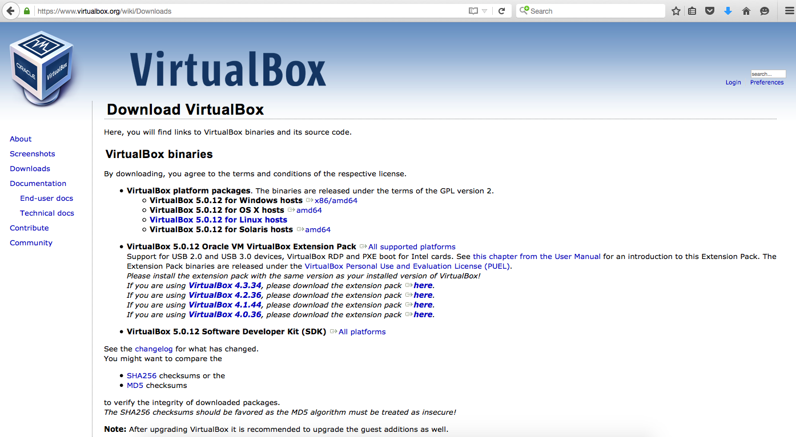
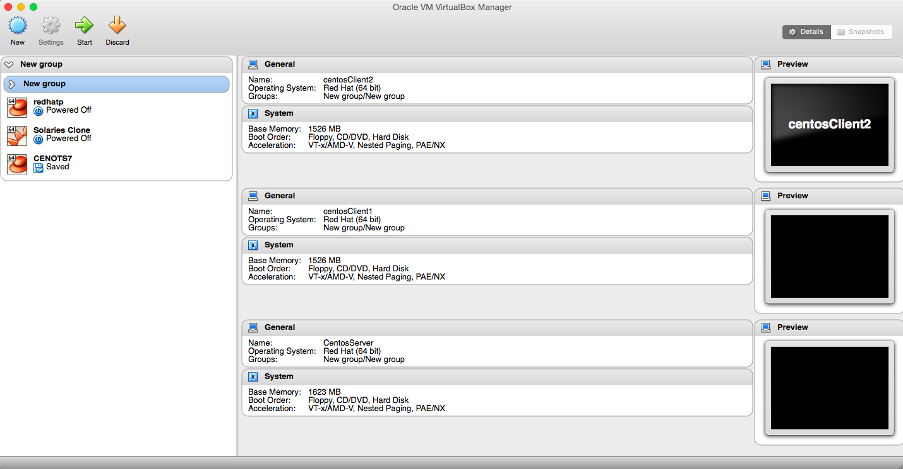
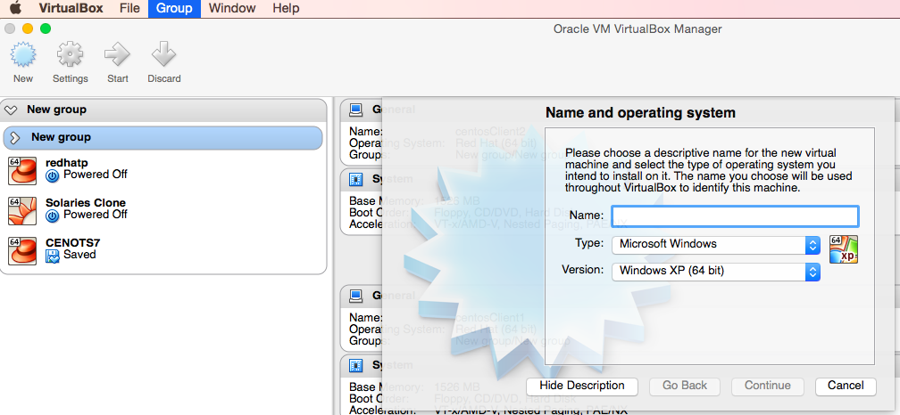
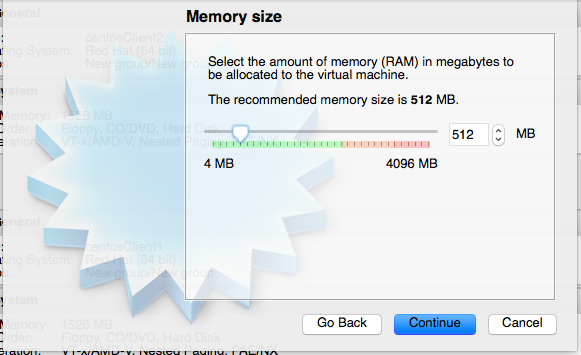
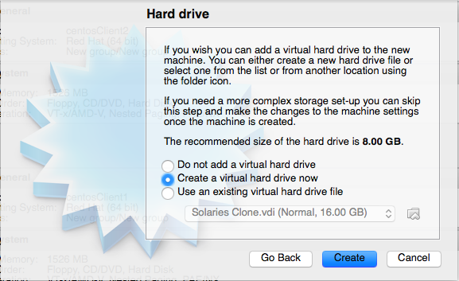
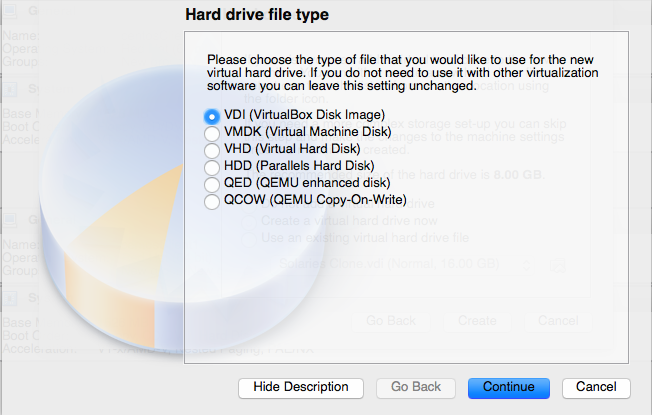
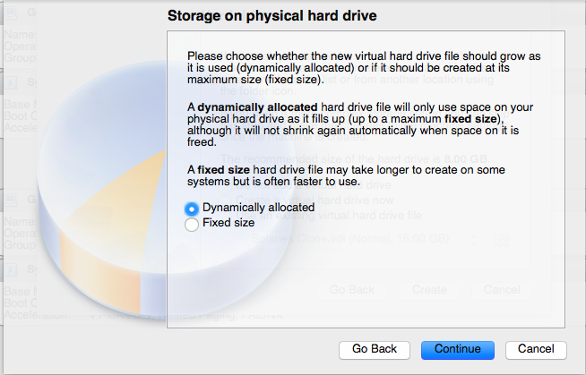
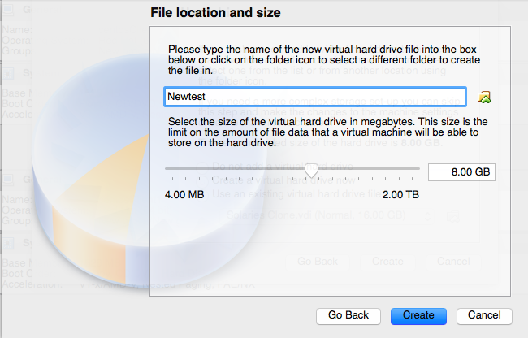
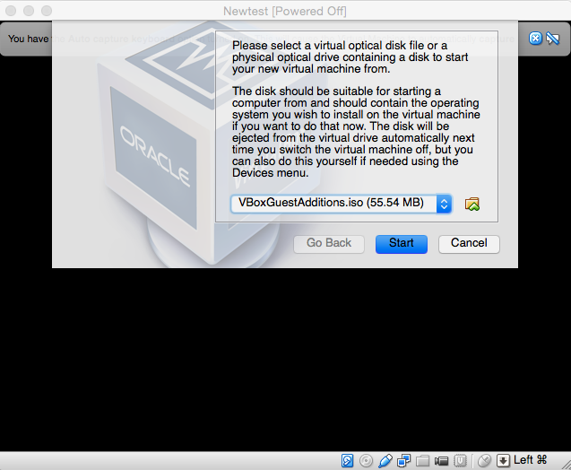

what is virtual box ?
Virtual box is the general purpose virtualization application.One can install it into the existing Operating System as a new software.Virtual Box allows you to install additional Operating system on it.
History
Virtual Box was initially developed by Innotek GmbH from Weinstadt,Germany, and was released in 2007 as an open-source software package. Later it was bought by Sun Microsystems in 2008, which was bought by Oracle in 2010.
Why use Virtual Box
1) Supports multiple OS in the single Box 2) Totally different environement from the host OS its installed in. 3) Can use two or more OS simulataneouly. 4) Snapshot and Clone Features to restore the virtual machine back and forth to a specific date/time and copying the current stage of the OS 5) Can add additional memory and disk space virtually. And many more.....
1) Download the Virtual Box from oracle site.Download
2) Click on the box.exe to complete the installation Process.Once, the box is fully installed, it will look like below image
3) Firstly we have to create the box, allocating the memeory and disk space to install the OS
a)Give the appropriate name for the box, and select the type of os you are going to install from drop down menu.
b) Allocate the memory for the new OS
c)Add the new hard drive for the OS
d) Select the type of hard disk
e)Dynamically allocated option will allow you to add the additional disk as needed
f) Allocate the disk space for new OS
4)Once the box is created, we need the OS to install on it. We can download the CentOS from its site. Download
5) Click on the box from left pannel and specify the location of the iso image and complete the process.
